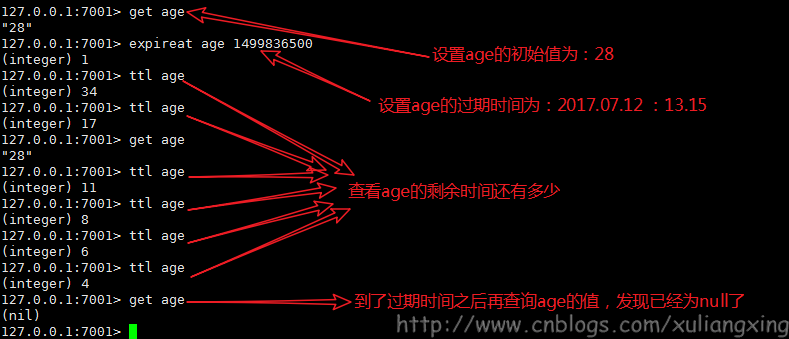

Redis中有个设置时间过期的功能，即对存储在Redis数据库中的值可以设置一个过期时间。作为一个缓存数据库，这是非常实用的。这就是我们本文要讲到的Redis过期机制。
设置过期时间
Redis对存储值的过期处理实际上是针对该值的键（key）处理的，即时间的设置也是设置key的有效时间。Expires字典保存了所有键的过期时间，Expires也被称为过期字段。
- _expire key time(以秒为单位)–这是最常用的方式
- setex(String key, int seconds, String value)–字符串独有的方式
注：
- 除了字符串自己独有设置过期时间的方法外，其他方法都需要依靠expire方法来设置时间
- 如果没有设置时间，那缓存就是永不过期
- 如果设置了过期时间，之后又想让缓存永不过期，使用persist key
常用方式
一般主要包括4种处理过期方，其中expire都是以秒为单位，pexpire都是以毫秒为单位的。
|
|
备注：timestamp为unix时间戳（例如：timestamp=1499788800 表示将在2017.07.12过期）
1、2两种方式是设置一个过期的时间段，就是咱们处理验证码最常用的策略，设置三分钟或五分钟后失效，把分钟数转换成秒或毫秒存储到Redis中。
3、4两种方式是指定一个过期的时间 ，比如优惠券的过期时间是某年某月某日，只是单位不一样。
下面我们就以EXPIREAT为例子简单讲解下用法。
返回值
一个整数值1或0，如下：
- 如果成功地为该键设置了超时时间，返回 1
- 如果键不存在或无法设置超时时间，返回 0
语法
以下是以Redis的EXPIREAT命令的基本语法。
|
|
示例
首先，在Redis中创建一个键：akey，并在akey中设置一些值。
现在，为设置创建的键设置超时时间为60 秒。
|
|

字符串独有方式
对字符串特殊处理的方式为SETEX命令，SETEX命令为指定的 key 设置值及其过期时间。如果 key 已经存在， SETEX 命令将会替换旧的值。
返回值
设置成功时返回 OK 。
语法
Redis Setex 命令基本语法如下：
示例
3种过期策略
定时删除
含义：在设置key的过期时间的同时，为该key创建一个定时器，让定时器在key的过期时间来临时，对key进行删除
优点：保证内存被尽快释放
缺点：
- 若过期key很多，删除这些key会占用很多的CPU时间，在CPU时间紧张的情况下，CPU不能把所有的时间用来做要紧的事儿，还需要去花时间删除这些key
- 定时器的创建耗时，若为每一个设置过期时间的key创建一个定时器（将会有大量的定时器产生），性能影响严重
- 没人用
惰性删除
含义：key过期的时候不删除，每次从数据库获取key的时候去检查是否过期，若过期，则删除，返回null。
优点：删除操作只发生在从数据库取出key的时候发生，而且只删除当前key，所以对CPU时间的占用是比较少的，而且此时的删除是已经到了非做不可的地步（如果此时还不删除的话，我们就会获取到了已经过期的key了）
缺点：若大量的key在超出超时时间后，很久一段时间内，都没有被获取过，那么可能发生内存泄露（无用的垃圾占用了大量的内存）
定期删除
含义：每隔一段时间执行一次删除(在redis.conf配置文件设置hz，1s刷新的频率)过期key操作
优点：
- 通过限制删除操作的时长和频率，来减少删除操作对CPU时间的占用–处理”定时删除”的缺点
- 定期删除过期key–处理”惰性删除”的缺点
缺点
- 在内存友好方面，不如”定时删除”
- 在CPU时间友好方面，不如”惰性删除”
难点
合理设置删除操作的执行时长（每次删除执行多长时间）和执行频率（每隔多长时间做一次删除）（这个要根据服务器运行情况来定了）
小结
定时删除和定期删除为主动删除：Redis会定期主动淘汰一批已过去的key
惰性删除为被动删除：用到的时候才会去检验key是不是已过期，过期就删除
惰性删除为redis服务器内置策略
定期删除可以通过：
- 配置redis.conf 的hz选项，默认为10 （即1秒执行10次，100ms一次，值越大说明刷新频率越快，最Redis性能损耗也越大）
- 配置redis.conf的maxmemory最大值，当已用内存超过maxmemory限定时，就会触发主动清理策略
注意：
上边所说的数据库指的是内存数据库，默认情况下每一台redis服务器有16个数据库（关于数据库的设置，看下边代码），默认使用0号数据库，所有的操作都是对0号数据库的操作，关于redis数据库的存储结构，查看 第八章 Redis数据库结构与读写原理
|
|
memcached只是用了惰性删除，而Redis同时使用了惰性删除与定期删除，这也是二者的一个不同点（可以看做是redis优于memcached的一点）
对于惰性删除而言，并不是只有获取key的时候才会检查key是否过期，在某些设置key的方法上也会检查（eg.setnx key2 value2：该方法类似于memcached的add方法，如果设置的key2已经存在，那么该方法返回false，什么都不做；如果设置的key2不存在，那么该方法设置缓存key2-value2。假设调用此方法的时候，发现redis中已经存在了key2，但是该key2已经过期了，如果此时不执行删除操作的话，setnx方法将会直接返回false，也就是说此时并没有重新设置key2-value2成功，所以对于一定要在setnx执行之前，对key2进行过期检查）
Redis采用的过期策略
惰性删除+定期删除
惰性删除流程
- 在进行get或setnx等操作时，先检查key是否过期，
- 若过期，删除key，然后执行相应操作；
- 若没过期，直接执行相应操作
定期删除流程（简单而言，对指定个数个库的每一个库随机删除小于等于指定个数个过期key）
- 遍历每个数据库（就是redis.conf中配置的”database”数量，默认为16）
- 检查当前库中的指定个数个key（默认是每个库检查20个key，注意相当于该循环执行20次，循环体时下边的描述）
- 如果当前库中没有一个key设置了过期时间，直接执行下一个库的遍历
- 随机获取一个设置了过期时间的key，检查该key是否过期，如果过期，删除key
- 判断定期删除操作是否已经达到指定时长，若已经达到，直接退出定期删除。
RDB对过期key的处理
过期key对RDB没有任何影响
- 从内存数据库持久化数据到RDB文件 持久化key之前，会检查是否过期，过期的key不进入RDB文件
- 从RDB文件恢复数据到内存数据库 数据载入数据库之前，会对key先进行过期检查，如果过期，不导入数据库（主库情况）
AOF对过期key的处理
过期key对AOF没有任何影响
从内存数据库持久化数据到AOF文件：
当key过期后，还没有被删除，此时进行执行持久化操作（该key是不会进入aof文件的，因为没有发生修改命令）
当key过期后，在发生删除操作时，程序会向aof文件追加一条del命令（在将来的以aof文件恢复数据的时候该过期的键就会被删掉）
AOF重写
重写时，会先判断key是否过期，已过期的key不会重写到aof文件